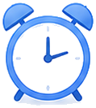
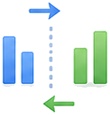
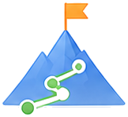
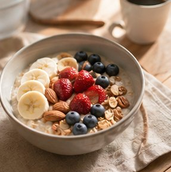

🌅 あなたの情報を入力
💡 ヒント: 起床時刻から出発時刻までの時間が朝ルーティンに使える時間です
💪 スライダーを増やすと：朝の体温が上がって代謝UP・血流改善で脳が覚醒。集中力が高まります。 / 推奨10〜20分
🌡️ スライダーを増やすと：温かいお湯で副交感神経をリセット→冷たい水で交感神経を優位に。目覚めがシャキッと。 / 推奨10〜15分
🧠 スライダーを増やすと：脳と体のエネルギー補給が充実。朝食を摂ると認知機能が30%向上するとの研究も。 / 推奨15〜30分
📚 スライダーを増やすと：毎日1章読むと年間365冊分。朝の集中力が高い時間に良質なインプットを習慣化。 / 推奨10〜20分
🧘 スライダーを増やすと：脳波がアルファ波に変わり、ストレス軽減・集中力向上。わずか5分でも効果あり。 / 推奨5〜15分
✏️ スライダーを増やすと：朝に目標・やること・気づきを整理。1日全体の目的が明確になり、意思決定速度が向上。 / 推奨5〜15分
📋 あなた専用の朝ルーティン
左側で条件を入力すると、ここに最適なタイムテーブルとスコアが表示されます。
AI音声ガイドで起床からスムーズに行動
時間になると音声でリードし、迷わず次の行動へ。トランジションも指導し、二度寝やダラダラを防ぎます。
ルーティン記録・実績追跡で習慣化をサポート
実行状況を毎日記録して可視化。連続実行日数やスコアで、楽しみながら朝の習慣を定着させられます。
週間パターン提案で自分に合う型を発見
過去のデータから、あなたに最適な「朝の型」を学習して提案。平日・休日それぞれの最適解が見つかります。
脳科学に基づく最適度で、朝の生産性を最大化。
起床後2〜3時間は前頭前野が最も活性化するゴールデンタイム。神経科学の知見に合わせて朝の行動を設計します。
神経科学的アプローチ
脳の覚醒リズムと集中力の波を考慮し、最も成果の出る時間帯に重要なタスクを配置します。
登録不要ですぐ使える
アカウント作成もメール登録も一切不要。プライバシーを重視し、思い立ったらすぐ生成できます。
リアルタイムフィードバック
余裕時間やタイトさをその場でスコア化。よりよい朝へリアルタイムに導きます。
使い方はたったの3ステップ
シンプルな操作で、あなただけの最適な朝ルーティンが完成します。

6:30起床時間・出発時間を入力
起きる時間と家を出る時間を入力するだけ。朝に使える時間が自動で計算されます。
優先したい朝習慣を選択
運動・瞑想・読書・朝食など、取り入れたい習慣と時間を選択して調整できます。
最適な朝ルーティンを自動生成
脳科学に基づいたタイムテーブルを瞬時に生成。グラフ・比較表で可視化できます。
充実の機能で朝の行動を最適化
計画から実行・振り返りまでをトータルにサポートします。
AI音声ガイド
時間ごとに音声で次の行動をナビゲート。
習慣トラッキング
達成率を記録して習慣化を後押し。

週間パターン分析
曜日ごとの傾向を分析して最適化。
比較表示（Before/After）
複数パターンを並べて比較できます。
結果コピー・CSV保存
生成したルーティンをワンタップで保存。
ゲーミフィケーション
スコア・バッジ・連続実行日数で継続。

こんな方におすすめ
朝の時間を有効に使いたいすべての方に。ライフスタイルに合わせて最適化します。
在宅ワーカー
始業前の時間を集中タスクに。生産性の高い朝を設計します。
資格勉強・学習中の方
脳が冴える朝に学習時間を確保。早起き習慣を段階的に。
子育て中の忙しい方
限られた朝時間でも、現実的で続けやすいルーティンを提案。

あなた専用の朝ルーティンを今すぐ生成
今すぐ生成する →- 登録不要・完全無料
- 脳科学に基づく自動設計
- グラフ・比較表で可視化
- 1分でルーティンが完成
🔗 朝活をもっと効果的に（次のステップ）
TaskFlow Timer
朝のタスクを時間計測し、実際の所要時間を記録。あなたの真のルーティンを把握して、さらに精密な時間管理が可能に。
📖 使い方
- ページを開き、入力フォームの項目を確認する
- 必要な情報を入力または選択する
- 実行ボタンをクリックして結果を取得する
- 表示された結果・アドバイスを確認する
- 必要に応じてコピー・SNSシェアで活用する
❓ よくある質問
⚠️ 本ツールの結果は参考情報です。専門的判断は資格を持つ専門家にご相談ください。
📋 このツールの詳細
「朝ルーティン最適化ツール」は、計画立案や情報整理をサポートする無料のガイド・プランニングツールです。
ステップに沿って進めることで、複雑なプロセスをわかりやすく整理し、抜け漏れを防ぐことができます。
初めての方でも迷わず使えるシンプルな設計で、すぐに結果を確認できます。
このツールでできること
起床時刻・出発時刻・やりたいことを入力すると、最適な朝のルーティンスケジュールを組み立てます。運動・瞑想・読書など習慣化したい朝活のタイムブロッキングも提案します。
活用シーン・使い方
朝の時間を有効活用したい方や、毎朝バタバタして出勤前にストレスを感じている方に最適です。早起きを習慣化したい方の起床時間の段階的な前倒し計画にも活用できます。
注意点・補足
急激な起床時間の変更は体調を崩す原因になります。15〜30分ずつ段階的に前倒しすることをおすすめします。睡眠時間は最低7時間確保を優先してください。
朝活の科学的根拠と実践法
脳科学の観点では、起床後2〜3時間は前頭前野（集中力・判断力）が最も活性化するゴールデンタイムとされています。この時間帯にコルチゾール（覚醒ホルモン）の分泌がピークを迎え、論理的思考・創造的作業に適した状態になります。
- 朝活に向いているタスク：資格勉強・読書・創作活動・深い思考を要する仕事
- 続けるための3原則：①就寝時間を先に固定②前夜の準備完了③最初は30分だけ早起きから
- 朝活の時間配分例：起床→軽い運動（15分）→シャワー→勉強・副業（90分）→出発
米スタンフォード大学のアンドリュー・フーバーマン博士は「起床後30分以内に太陽光を浴びる」ことが体内時計のリセットに効果的と述べています。朝活は「夜型→朝型」への変換ではなく「就寝時間を前倒しする」ことで成立します。
朝の習慣・生活リズムに関するデータ（厚生労働省）
厚生労働省の睡眠指針では、起床後に日光を浴びることが体内時計のリセットに重要とされています。朝のルーティンを最適化することで、1日の生産性・精神状態が向上します。
| 項目 | データ・内容 | 出典・備考 |
|---|---|---|
| 睡眠時間の推奨 | 成人：7〜9時間（米国睡眠財団）。日本人の平均は約6時間22分（OECD最短水準） | 厚生労働省「健康づくりのための睡眠ガイド」 |
| 朝型vs夜型の生産性 | 朝型の人は意思決定力・自制心が高い傾向（心理学研究） | 各種行動科学研究 |
| モーニングルーティンの効果 | 起床後1〜2時間の過ごし方が1日の集中力・気分に大きく影響 | 神経科学・習慣研究参考 |
| スマホ依存の対策 | 起床後30分はスマホ非確認が推奨（脳の覚醒モードへの移行を妨げないため） | 各種デジタルウェルビーイング研究 |
⚠️ 計算結果の活用にあたって
💡 このツールの活用事例
事例1：岡本さん（在宅勤務中・朝の生産性が低い）
➡ 起床6時・始業9時・やりたいこと3つを入力
✅ 運動30分+読書20分+資産運用確認10分の朝ルーティンを自動設計。3週間で習慣化
事例2：上野さん（子育て中・朝時間が5分しかない）
➡ 起床7時・保育園送り7時45分で作成
✅ 5分間の「ながら瞑想」と前夜の準備を組み合わせた現実的なルーティンを提案
事例3：野村さん（資格勉強中・早起きを始めたい）
➡ 資格試験まで3ヶ月・毎朝勉強を計画
✅ 5時起き・勉強90分のルーティンを段階的（15分ずつ前倒し）に設計
よくある質問
- Q: 朝活が効果的な理由は何ですか？
- 脳科学的には起床後2〜3時間が最も集中力が高いとされています（コルチゾール分泌のピーク）。また朝は外部からの割り込みが少なく、静かな環境での集中作業に適しています。米国の成功者の多くが早起きを習慣にしていることも知られています。
- Q: 朝活を続けるためのコツは何ですか？
- ①就寝時間を先に固定する（朝5時起き→22時就床が目標）②前夜に翌朝の準備を済ませる③スマートフォンのアラームを2〜3個セット④最初の1週間は30分早起きから始める（急な変化は継続しにくい）が効果的です。
- Q: 朝活に向いているタスクは何ですか？
- 集中力が高い朝は①資格勉強・読書②副業・創作活動③運動・ストレッチ（体温が上がり代謝アップ）が適しています。メール返信・SNSチェックは後回しにし、朝のゴールデンタイムを価値の高い活動に使うことが推奨されます。
朝のルーティンを整えるための実践ガイド
朝の過ごし方は一日の生産性・気分・集中力に大きく影響します。自分に合った朝のルーティンを設計することで、毎日をより良いスタートで始めることができます。
- コルチゾール（ストレスホルモン）は起床後30〜60分が最もピークになり・自然な活動促進効果がある
- 朝の習慣が固定化されると「意志力を使わず」に行動できるようになる（認知的負荷の削減）
- 成功者の多くが早起き・朝の習慣を重視しているという調査結果が多い
Q. 朝のルーティンを無理なく続けるにはどうすればよいですか？
A. 朝のルーティンを継続するコツとして「最初は1〜2つの小さな習慣から始める：完璧なルーティンを一気に作ろうとすると挫折しやすい」「睡眠時間を確保する：起きる時間を早くするより先に「就寝時間を早める」ことが重要」「前夜の準備を習慣化する：翌朝の服・持ち物・朝食の準備を前日夜にやっておく（朝の判断コストを減らす）」「最初の7日間を乗り越える：新しい習慣は最初の1週間が最も難しい・小さな成功体験を積み重ねる」があります。
Q. 朝の運動と夜の運動、どちらが効果的ですか？
A. 朝と夜の運動の違いと選び方として「朝の運動：目覚めが促進される・代謝が上がる・気分改善効果がある・1日の達成感が生まれる。ただし空腹・体温が低い状態のため、ウォームアップを十分に行う必要がある」「夜の運動：仕事後のストレス発散に向く・筋力トレーニングは夕方〜夜が筋肉のパフォーマンスが高い・就寝直前は交感神経が刺激され眠れない場合がある（就寝2時間前までに終わらせる）」があります。継続できる方が結局最も効果的なため、自分のライフスタイルに合う時間帯を選ぶことが最重要です。
Q. スマートフォンを朝一番に見る習慣をやめるコツは？
A. スマホの朝一番チェックをやめるコツとして「スマートフォンを寝室に持ち込まない：別室に充電する・目覚まし時計は専用の置時計を使う」「「スクリーンタイム」機能で朝7〜9時は通知をオフにする」「起床直後にまずやることを決めておく：水を飲む・ストレッチ・深呼吸等でスマホよりも先に身体を動かす」「最初の30分は「インプットなし」を徹底する：朝の集中力がある時間をSNS・ニュースで消費しない」があります。スマホを見てしまう衝動は強いため「環境を変える（届かない場所に置く）」方法が最も効果的です。